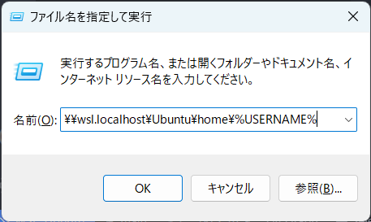
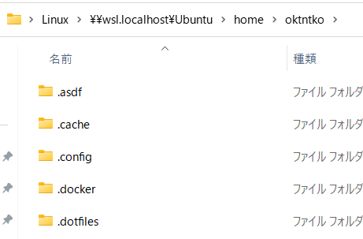
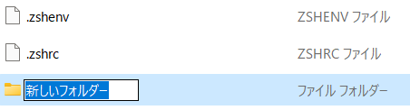
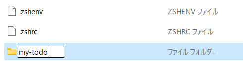
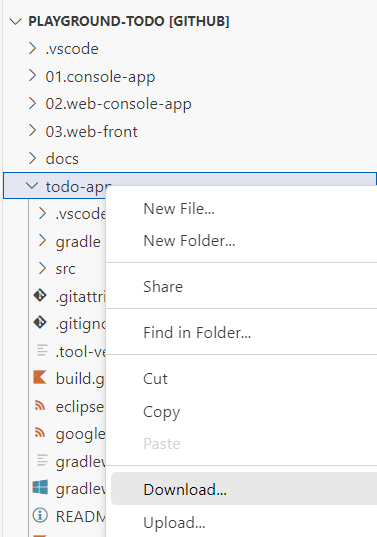
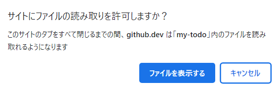
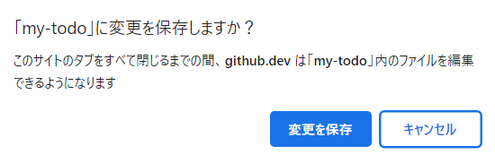
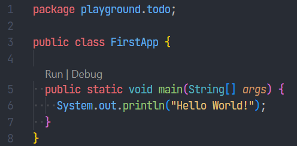
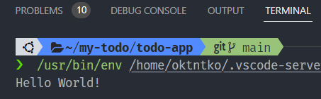
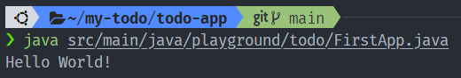

▶️ プロジェクトを作ろう¶
📁 プロジェクトのディレクトリを作ろう¶
| Windows Terminal | |
|---|---|
1 2 3 4 | |
コマンド解説
ホームディレクトリは Windows でいうC:\Users\%USERNAME%にあたる.
cd = change directory. ディレクトリを移動する. ~(チルダ) = ホームディレクトリの別名.
mkdir = make directory. ディレクトリを作成する.
ls = list segments. ファイルやディレクトリの一覧を表示する.
コマンドで実行した操作を画面からも実行してみましょう。
- Win+R から
\\wsl.localhost\Ubuntu\home\%USERNAME%を入力する.- 
- 
- Ctrl+Shift+N でフォルダを作成し フォルダ名に"my-todo"を入力する.
- 
- 
- 画面を確認する.
開発の現場ではコマンドの操作で行うことが多くあります。 なぜでしょうか？
- コマンドラインで操作してもらおうとすると...
- 複雑な操作でもテキストだけで手順を書ける。
- 操作の履歴が残るので、ミスがあったときに原因が分かりやすい。
- 画面から操作してもらおうとすると...
- 複雑な操作になると画像なども駆使しないと手順が書けない。
- 操作の履歴が残らないので、画面キャプチャを取りながら進める必要がある。キャプチャを取らないとミスった原因が追えない。
そのため、コマンドラインでの操作に慣れる必要があります。 最初のうちは、画面から操作するとこう、それをコマンドで操作するには？ というように、画面とコマンドでの操作を往復してリンクさせるといいかもしれません。
CUI と GUI
ショートカットキー然り、コマンドラインから操作できるとキーボードだけでパソコンを操作できるので作業効率は上がります。
しかし、エンジニアはコマンドラインだけ使って仕事をするわけではありません。CUI と GUIは使い分けです。
画面から操作することも多いので、\\wsl.localhost\Ubuntu\home\%USERNAME% はクイックアクセスに追加しておこう。
⚡ プロジェクトのディレクトリの Git を初期化しよう¶
Git の操作に触れるのはここだけです。コミットをしたりブランチを切ったりは適当なタイミングで実施してください。
| Windows Terminal | |
|---|---|
1 2 3 4 5 | |
📃 プロジェクトのソースコードを持ってこよう¶
- GitHubのplayground-todo をブラウザで表示する.
.(ドット)を入力する.todo-appを右クリックして Download ボタンをクリックする.- 
- エクスプローラーのアドレスバーに
\\wsl.localhost\Ubuntu\home\%USERNAME%\my-todoを入力する. - "フォルダの選択"をクリックする.
- "サイトにファイルの読み取りを許可しますか？"＞ファイルを表示する.
- 
- ""my-todo"に変更を保存しますか？"＞変更を保存.
- 
不要なファイルを削除しよう
WSLにダウンロードするとファイル名に"Zone.Identifier"とついたファイルが生まれることに気づくかもしれません。 理屈はなんかあるらしいですがいらないので消しましょう。
| Windows Terminal | |
|---|---|
1 2 3 4 5 | |
👋 Hello World をしよう¶
とにかく動かしてみようという割に前置きが長かったですが、さっそく動かしてみましょう。
VSCode の拡張機能でプログラムを実行する方法¶
| Windows Terminal | |
|---|---|
1 2 | |
- VSCodeで
src/main/java/playground/todo/FirstApp.javaを開く. public static void main(String[] args) {の上に表示されているRun | Debugから、Runをクリックする.- 
TERMINALタブにHello World!が表示される- 
コンソールからプログラムを実行する方法¶
| Windows Terminal | |
|---|---|
1 2 3 | |

これで準備は完了です！